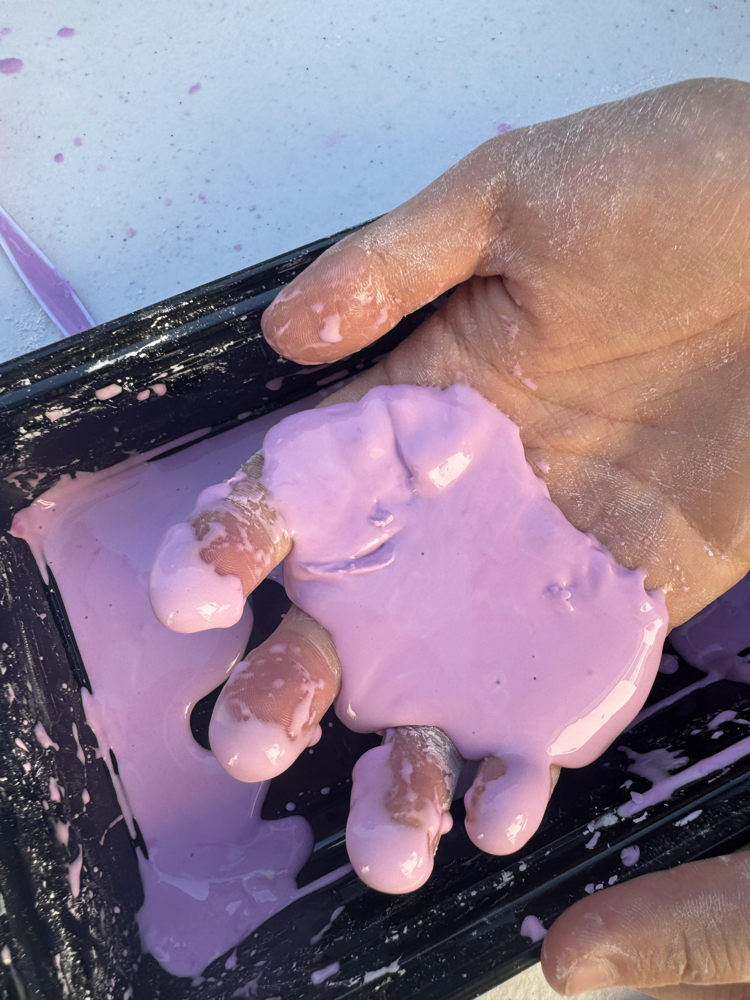
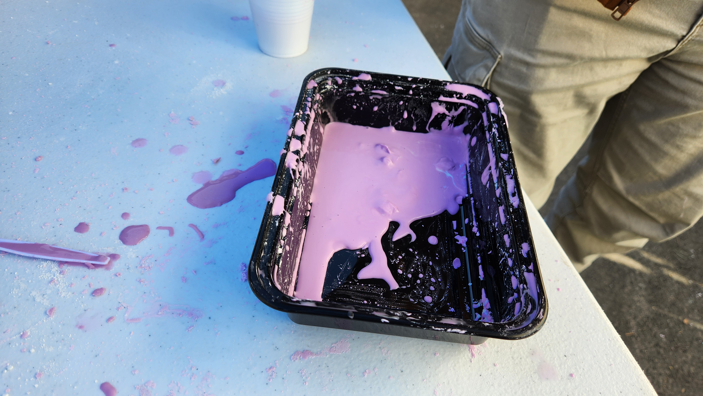
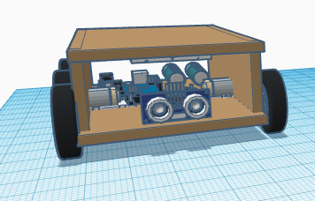

1/19/24 - This week we started our Quater 3 project.
- We chose to do make and code an Arduino car.
> Our idea is an obstacle course, inspired by the real life moose test.
> We will need to utilize many types of engineering types and processes to successfully complete this project.
Overall, I am excited to see what we encounter as we progress through this project.
1/26/24 - We continued on our Quarter 3 project. This week we worked on CADing our design.
- This was an activity we had done 2 weeks ago, where we had messed with Non-Newtonian Fluid.

It lowkey looks like the grimace shake

- For our project, we had completed the CAD on what it is going to look like, and started to research for the electronics.
> Since we are unable to have wheels steer like a real car, we decided to use 6 wheels, where the 2 wheels in the middle will be powered by motors, and invert directions when we need to turn.
> We also had the idea to have a closed top for the electronics so that we can fit all the parts with as little space we can.
> We plan to have the top be able to fold so we can open it up and work with the electronics with little trouble.

> Next week we will continue to work on the electronics CAD and hopefully to get it to work, so we can started building the car with actual materials.
I enjoyed this week as we started the proper engineering process as we started the CAD, ran into problems, and were able to work around the problems. I cannot wait to see what is to come for this project.
2/5/24 - For the past week we worked on finishing our CAD for the electronics and started building our chassis.
- This week we worked with cardboard to start our chassis and worked a little with the motors.

> I was able to solder wires onto both of the motors, giving me more practice with soldering. But sadly, on one of the motors, both of the wires came off and are missing, so I need to solder more wires next week.

> For our chassis, we completed glueing cardboard together and marked areas will we will put the electronics.
- By the end of the week I hope we can create a working code and get the wiring to work.
This weekend I had went shopping for clothes for the new lunar and did homework.
2/13/24 - This week we finished getting the wiring to work and all the electronics into the chassis.
- The wiring was a little difficult to figure out, and I even burnt a controller.
> Eventually, with help from Mr. Poole, we got the wiring to work and get the motors running.

- We also were able to move all the electronics into the carboard chassis, and zip tied the arduino onto the roof.


This week I hope we can get all the electronics fully secured into the chassis, and get the car to move. I also hope we can start working on the code as well.
2/26/24 - This week we completed our car and got it to work at the competition.
- Our car did not perform as we expected since it would drift right whenever it went straight. So it could not make a perfect square.
> Despite not doing the original function, I believe we did the best as we could.
> At least we had a running car with code that would work if it did not have an alignment issue.
- If we made a second car, I would make sure we did everything more neatly and actually put a sensor on so we can go through with the original function we planned
These are pictures of the car the Friday before the week of the competition.


These pictures are the car on competition day.


This was after it broke :(
Here is a promotion video.
I enjoyed this project as it required a lot of effort and skill to build the car. And although we did not have the exact car function we wanted, I believed the car was still really good.